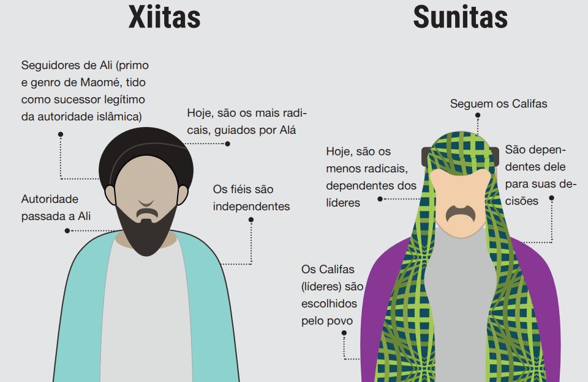
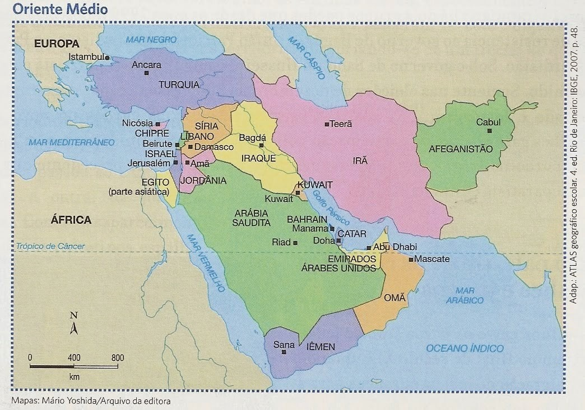

Para entender de verdade as coisas que estão acontecendo no Irã, nós precisamos primeiro voltar um pouco no tempo e entender: Quem é o Irã? Ou seja, a história e o contexto histórico, geográfico e político dele, também precisamos saber a forma de governo que o Irã tem e também veremos um pouco da religião.
Bom o Irã é um país que fica localizado no oriente médio, e tem uma origem Persa, na verdade o Irã hoje em dia é a antiga Persa, muita gente acha que quem vive no Irã é árabe e que lá só tem árabes, mas na verdade o povo iraniano é Persa e não árabe, é importante ressaltar que esses dois, Persa e Árabe, são completamente diferentes um do outro, a língua é diferente, os costumes, a alimentação também é diferente, claro que existem algumas semelhanças entre os dois como por exemplo o Irã ser um país muçulmano, muita gente confunde essas duas coisas por sinal, mas lembrem-se: Persa é uma etnia! E muçulmano são as pessoas que praticam o Islamismo que é uma religião, nós vamos falar sobre a religião no Irã mais tarde, mas por hora é importante que você entenda isso: O Irã é um país de origem Persa que fica localizado no oriente médio e que também é um país muçulmano, pois segue o Islamismo. Certo? Agora vamos voltar ao contexto histórico do Irã.
Uma característica do Irã é que eles (o povo), são islâmicos de maioria Xiita, e isso é algo muito significativo porque os Xiita não são maioria no mundo muçulmano, na verdade a grande maioria do mundo muçulmano são de Sunitas, e isso acaba inclusive alimentando uma falácia de que: o povo Xiita é muito mais radical que o povo Sunita, mas isso é uma completa mentira.
Mas espera você deve tá um pouco confuso com isso, não é? Afinal o que são Xiita e Sunita, calma que eu explico:
Os sunitas e xiitas são duas correntes de pensamento do islamismo que se originaram pela disputa da liderança religiosa após a morte de Maomé. Quando o profeta fundou a religião, ele não anunciou quem seria seu sucessor, Ali, genro e primo de Maomé, reivindicava essa posição por ser membro da família e casado com Fátima, a única filha viva do profeta no momento de sua morte. Entretanto, a maioria dos muçulmanos o consideravam muito jovem para tornar-se um chefe religioso. Desta forma, Abu Bakr, um amigo de Maomé, foi escolhido como sucessor e assumiu a liderança.
Ou seja, de forma básica os Xiita são os seguidores de Ali, eles não aceitam o comando de outra pessoa que não seja descendente do profeta, e reconhecem apenas as escrituras do Alcorão, seu líder religioso é chamado de Imã.
Já os Sunita são os integrantes do grupo que reconheceram Abu Bakr como sucessor, eles ganham esse nome por também aceitar as escrituras da Suna, um documento sagrado que narra as experiências vividas por Maomé, quando estão com alguma dúvida na interpretação do Corão. Seu líder religioso é chamado de Califa.
Entenderam? Logicamente existe todo um contexto mais profundo por trás dessas duas vertentes, mas não vamos focar tanto nisso.
Voltando ao Irã: algo que é bastante importante saber é: o Irã é um país que depende muito dos recursos minerais, e quando dizemos muito é muito mesmo! O Irã é a maior reserva de gás natural do mundo, é a 4° reserva de petróleo do mundo, e também é um país que pertence a OPEP (organização dos países produtores de petróleo), o Irã também controla o estreito de Osmur, uma passagem por onde ¼ do petróleo do mundo é passado.
O Irã também é uma região de passagem, se observarmos no mapa a posição geográfica do oriente médio vemos que ele está entre, a África, a Europa e a Ásia, e por ele passam comerciantes, oleoduto, gasoduto etc.
Até aqui já é possível entender a importância que o Irã tem, agora vamos avançar um pouco na questão histórica.
Antes do ano de 1979, o Irã era um país Monarquista, ou seja, havia reis no Irã, porém lá o “rei” não é chamado de rei, cada país tem uma forma específica de chamar o seu governante monarca, na Rússia, por exemplo, o governante monarca era chamado de Czar, já no Irã chamamos os “reis” de Xá.
Até 11 de fevereiro de 1979, quem dominava o Irã era o Xá chamado, Mohammad Reza Pahlavi, o Irã por ser um país com uma grande reserva de petróleo tinha uma parceria comercial com os Norte americanos (sim você leu certo), o ponto é apesar de ser um país muito rico o Irã também era um país com uma desigualdade social muito grande, e em determinado momento o povo começa a perceber isso e é quando alguns movimentos que vamos chamar de movimentos fundamentalistas, que são movimentos que vão tentar juntar o estado e a religião e que começa a culpar o ocidente por todas as coisas ruins que acontecem por lá, toda a desigualdade social e etc; sendo o principal alvo os Norte americanos, já que eles representavam a maior interferência no Irã pois eles eram a maior parceria comercial que os Xás tinham.
Enfim todos esses movimentos fundamentalistas vão culminar na Revolução Iraniana que vai tirar o Xá do poder e vai afastar a monarquia, transformando o Irã em um país reacionário que acaba ferindo e violando vários direitos humanos.
Mas aí você deve tá pensando: Então isso significa que o Islamismo é uma coisa ruim? É uma religião opressora e repressora, né?
E a resposta é: Não, na verdade o Islamismo é uma religião tão boa como qualquer outra, se a gente parar pra analisar é até melhor que muitas outras religiões por aí.
Mas então por que essas coisas estão acontecendo? Bom a religião de fato não é ruim, o problema tá na interpretação dessa religião.
A partir dessa revolução o Irã se torna um país que se baseia no Alcorão, que é o livro sagrado do Islamismo porém com uma Interpretação Xiita totalmente radical, eles também começam a culpar os estados unidos por tudo (não que eles não sejam), e que também vai tentar a todo custo afastar a influência ocidental, inclusive é a partir daí que surge essa mentira e esse preconceito ocidental de que os Xiita são mais radicais do que os Sunita, já que existem poucos Xiita no mundo muçulmano e a visão que nós do ocidente temos é desse radicalismo, acaba que a conclusão final é de que todo o Xiita é fundamentalista e radical…. MAS NÃO É, essa é uma visão errada e preconceituosa.
Agora que nós já conhecemos um pouco da história do Irã, vamos ir um pouco mais pra frente pra entender o que está acontecendo agora.
Após a revolução Iraniana em 1979, o Irã deixa de ser um país Monarquista e passa a ser um país Teocrático.
Bom um país Teocrático nada mais é do que um país que tem como governante um líder supremo que segue e se baseia totalmente em uma religião específica, no caso do Irã esse líder é chamado de Aiatolá, o Aiatolá é semelhante ao papa da igreja católica, ou seja é a maior autoridade do país e segue e se baseia no Alcorão, no caso com uma Interpretação extremamente errada dele, o Aiatolá que assumiu o poder depois do fim dos Xá se chamava Ruhollah Khomeini, uma das primeiras medidas que ele tomou ao subir ao poder foi acabar com qualquer ocidentalismo que existia na sociedade Iraniana.
Infelizmente as mulheres foram as mais afetadas por essa decisão, muitas perderam o direito de trabalhar, estudar, e tornaram-se legalmente dependentes de uma figura masculina, seja ela o pai ou o marido. Nesse novo regime as mulheres deixaram de existir como indivíduos independentes com muitos dos seus direitos sendo cassados.
O impacto mais visível disso tudo está nas vestimentas, onde as mulheres passaram a ser obrigadas a usarem o Hijab, um véu/lenço que tem o objetivo de cobrir e esconder os cabelos.
Se você não sabe, o Hijab não era uma coisa obrigatória no Alcorão diferente do que muitas pessoas falam, na verdade a decisão de colocar o véu é única e exclusivamente da mulher e não existe nenhuma consequência caso ela não queira usar, até porque a decisão de usar ou não usar o véu é uma decisão que só tem a ver com a mulher e com deus, é uma decisão importante e as mulheres só tomam ela quando estão preparadas para isso, mas infelizmente com a nova interpretação radical que o Aiatolá tem do Alcorão, o Hijab passou a ser uma vestimenta obrigatória para as mulheres.
Além do Hijab ser obrigatório, a responsabilidade de averiguar e manter essas obrigatoriedade é feita pela Polícia da Modalidade, que é uma unidade especial das forças policiais Iranianas, cujo o objetivo é impor e garantir que as regras de vestimentas estão sendo respeitadas, basicamente os membros da polícia da moralidade andam pelas vilas e cidades geralmente a paisana para não serem identificados, e se encontram alguma irregularidade atuam por meio de muitas ou até mesmo de prisão.
E foi isso que aconteceu no dia 16 de Setembro e que causou todos os protestos que vemos hoje.
O atual Aiatolá do Irã se chama Ali Khamenei, e como seus antecessores ele mantém as coisas como elas estão no Irã.
O que levou todos os protestos atuais a acontecerem foi a morte da jovem de 22 anos, Mahsa Amini, que no dia 16 de Setembro foi detida na rua pela polícia da moralidade por não estar respeitando as regras de uso do Hijab, a mesma foi presa e levada para instalações da polícia onde acabou falecendo algumas horas depois, a polícia disse que Mahsa teve um ataque cardíaco, porém a autópsia revelou que Amini sofreu graves lesões no crânio que foram causadas por prováveis impactos diretos, algumas fontes e alegadas testemunhas dizem que ela foi espancada com barras de ferro e que teve a cabeça projetada contra o chão e a parede, porém o governo Iraniana nega todas essas acusações, dizendo que por conta do ataque cardíaco Mahsa acabou caindo e fraturando o crânio.
A morte de Mahsa acabou desencadeando uma série de protestos que rapidamente se espalharam pelas principais cidades do Irã, esses protestos estão sendo respondidos com violência e forte repressão por parte da polícia Iraniana que, vale lembrar, é controlada e responde unicamente ao Aiatolá, que disse que prometeu atacar e destruir aquilo que chamam de núcleos anti Iranianas que estão se aproveitando dos protestos para espalhar o caos no país.
Essa é a terceira grande onda de protestos no Irã, sendo a primeira iniciada em 2019 e indo até mais ou menos julho de 2020, relacionada ao aumento de até quase 200% no preço dos combustíveis. A segunda onda veio em Julho de 2021, motivada pela falta de água potável em diversas cidades e vilas Iranianas, todos esses protestos são altamente violentos e refletem a satisfação do povo com o regime Teocrático do país.
Bom, esse manual é uma forma de explicar o que está acontecendo no Irã e como as coisas chegaram até esse ponto, sem fake news e desinformações sobre a história, a real situação do país e sobre a religião no Irã.